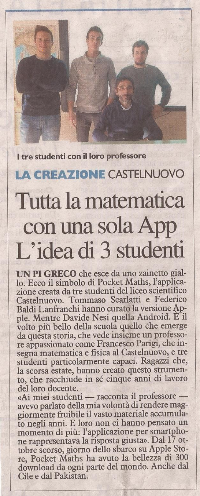
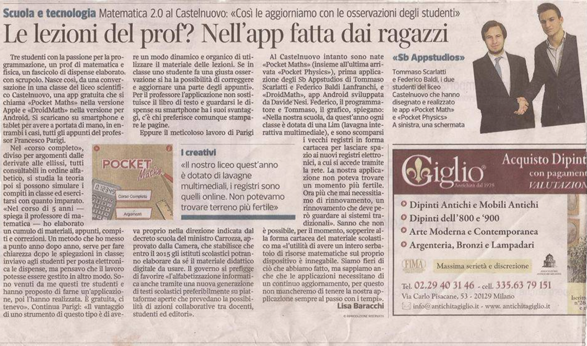

In 2013, during my last year of high school at Liceo Scientifico G. Castelnuovo, I developed an iOS app which gathered lectures, exercises and exams from my maths and physics professor. The design and the development of the application was a jointly effort between a passionate classmate, Federico Baldi Lanfranchi, and me. The support of our professor, Francesco Parigi, was really generous. He gave us the possibility to use his material with no limitations, and helped us developing some of the utilities. It has been a really educational project, that gave us the possibility to give some "lectures" to other students and professors and to have two interviews with two local journals (La Nazione, Il Corriere Fiorentino) as shown below. We also created a startup with the fancy name "SB AppStudios", which recalled the initials of our last names.
 